Case No. ZT-001 · Timeline · 2022
Payette Architecture
What I did
- Produced 20+ detailed Adobe Illustrator renderings and visual presentations supporting client design approvals
- Led concept development of an interactive pavilion for the South Station Greenway that drew 1,000+ visitors in its first month
ProjectDewey Square Pavilion

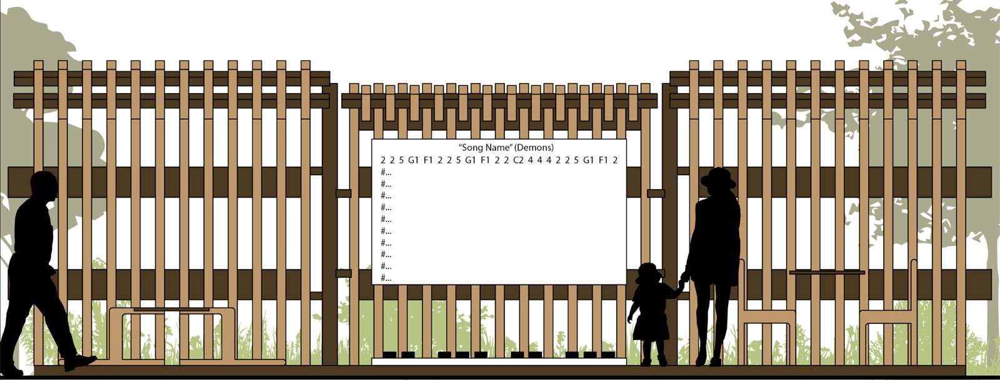

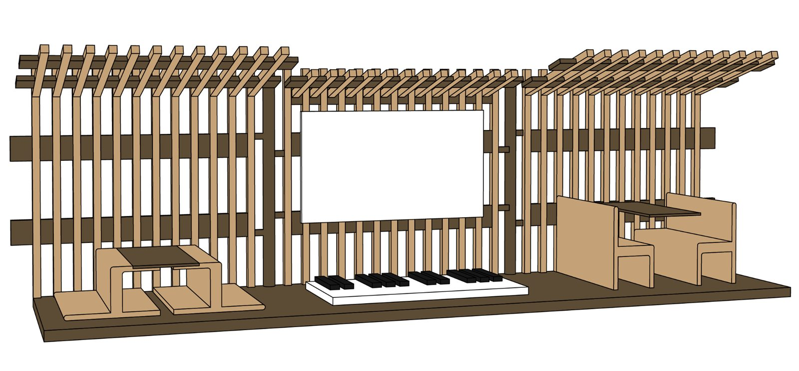
The brief
Design an interactive wall in Dewey Square or on the lawn next to it. The pavilion had to be dual-purpose, and take a clear position on how it relates to and affects the site as it exists today.
The design
The pavilion gives people shade and a place to sit, enjoy the Greenway and eat. In the middle of the eating area is a floor piano that children or adults can play as they pass by.
-
Floor piano
A music board matches every key, so anyone can play without knowing how to read notes.
-
Folding furniture
The chairs and tables fold into smaller desks for kids to play on.
-
Three turning segments
The fence is split into three segments that turn, so it can fit different spots on the site.
The site

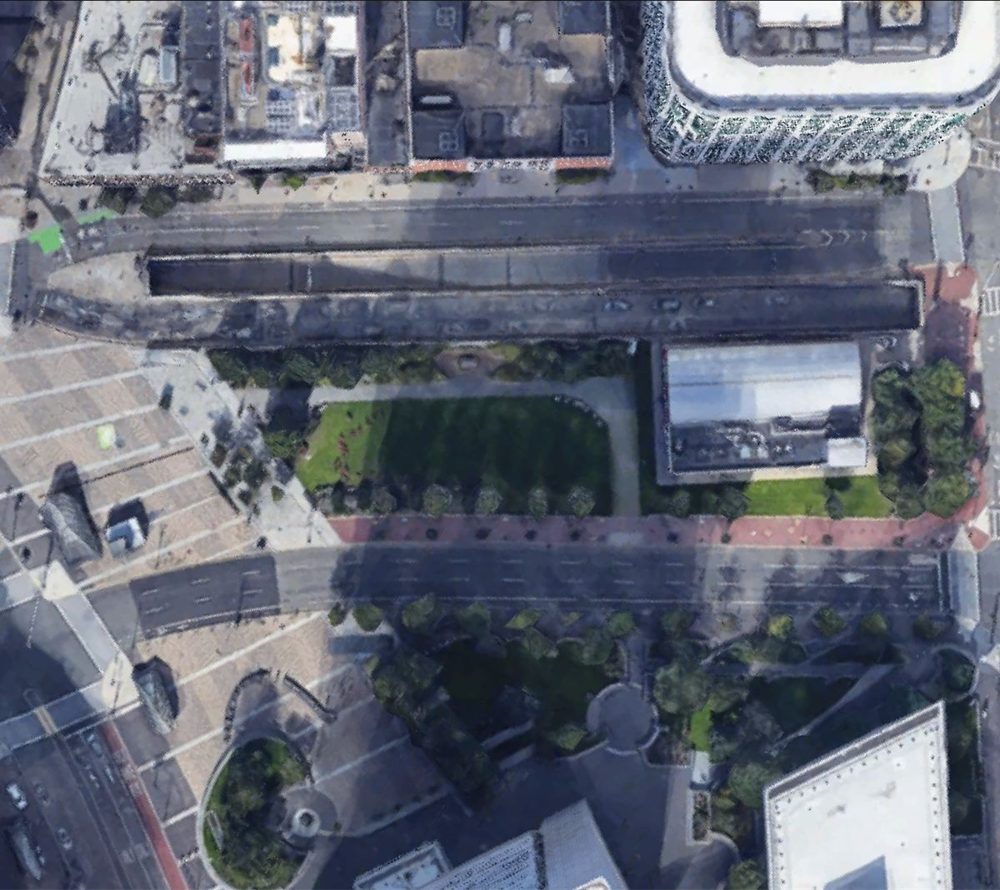

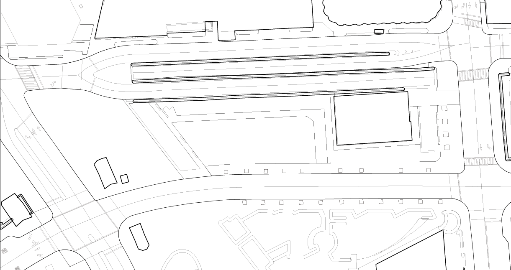
Fig. C: Dewey Square, Boston.
Dewey Square is a public plaza in downtown Boston, next to South Station. It’s part of the Rose Kennedy Greenway, a chain of connected public parks that cuts through downtown. It’s a busy space that hosts farmers’ markets, food trucks, concerts, yoga classes and more.
Site diagrams

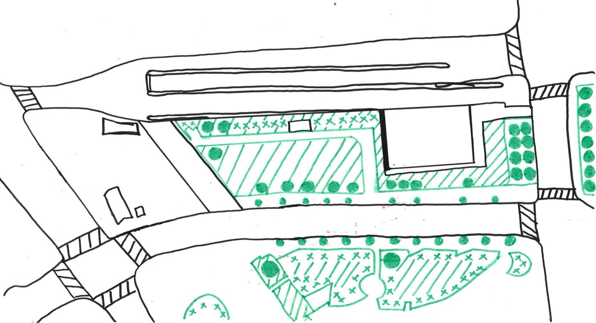

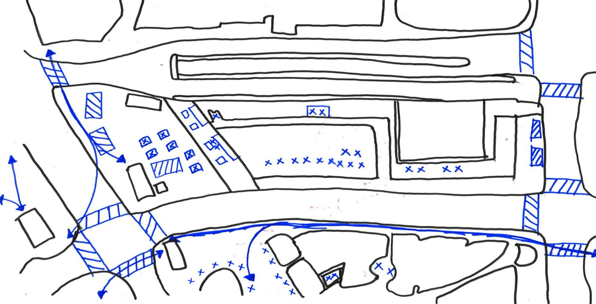
Drawings

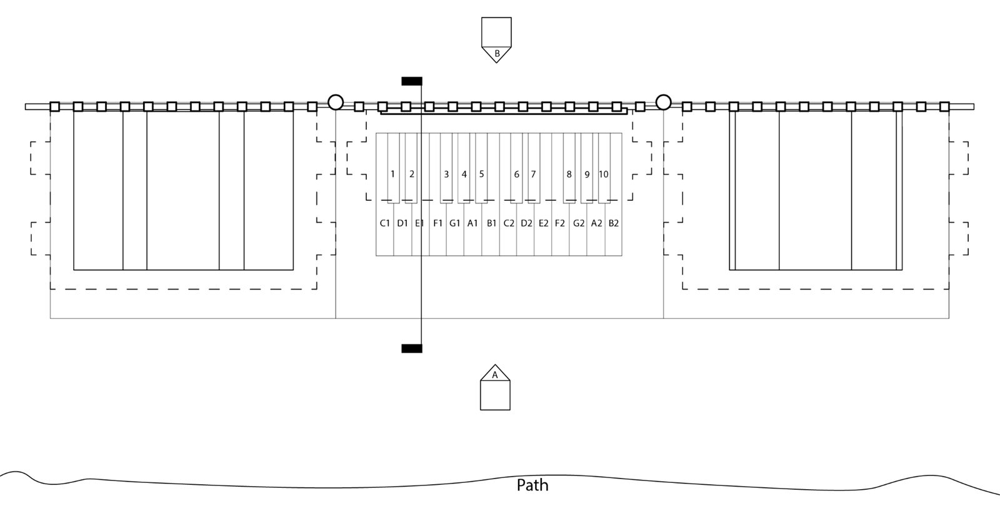

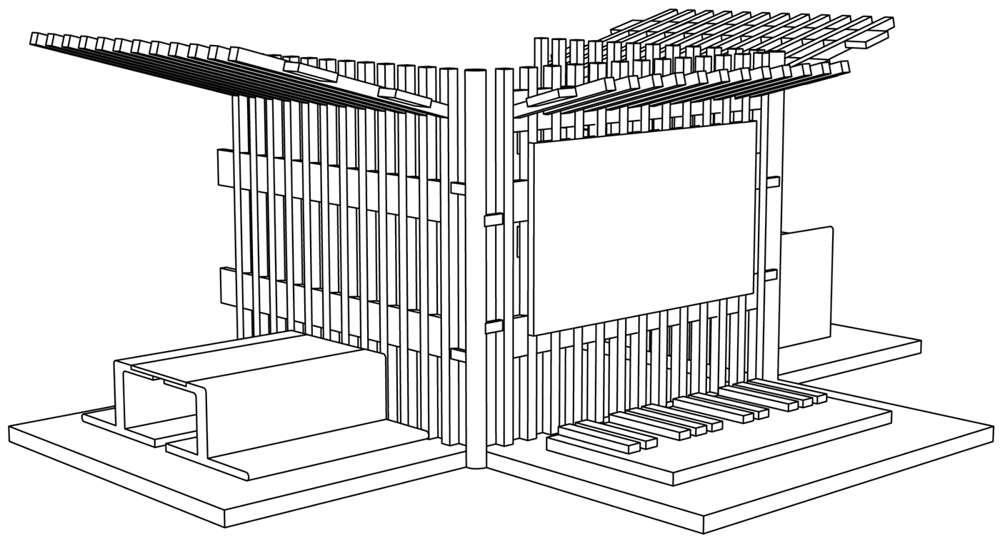

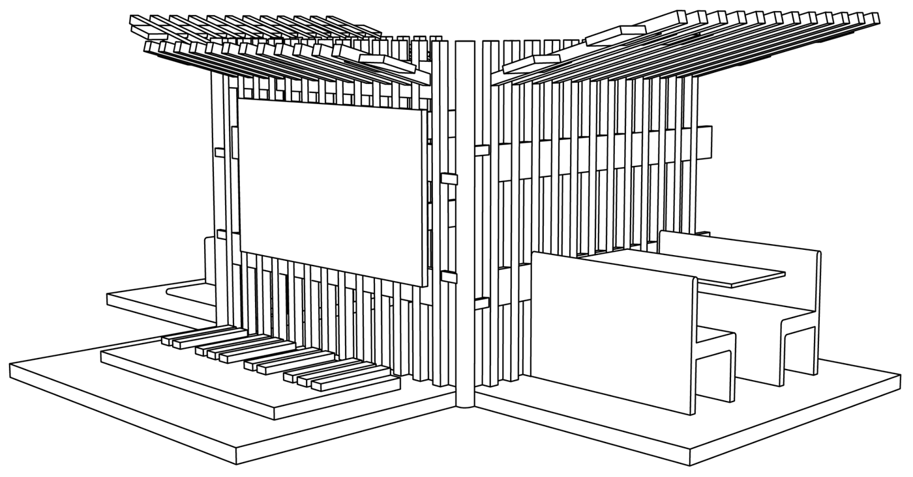

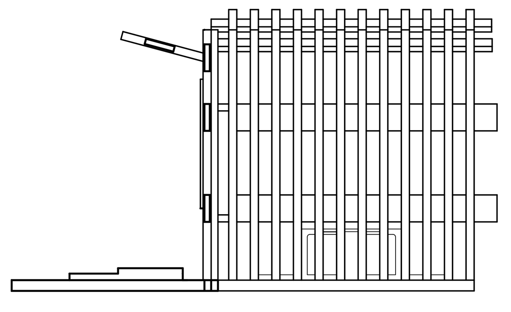
Floor piano

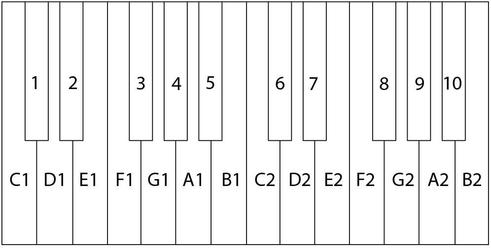
Fig. J: Key layout.
Each key is labeled to match the music board, so no music notes are needed.
Physical model


Fig. K: The model, photographed.
Made from wood, foam and hot glue. The frame, fence, chairs, table, roof and platform are wood, and the music board and floor keyboard are foam. Like the design, the model is three segments joined by a rod, and it folds the same way.